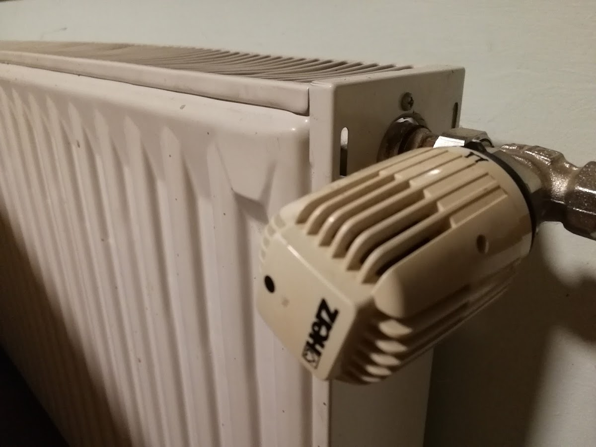
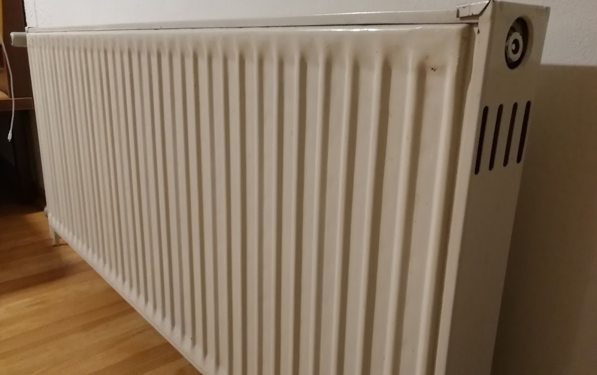
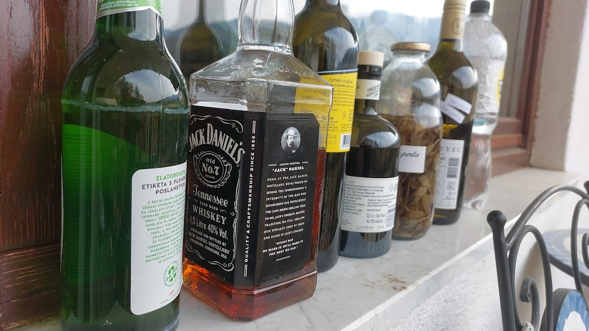
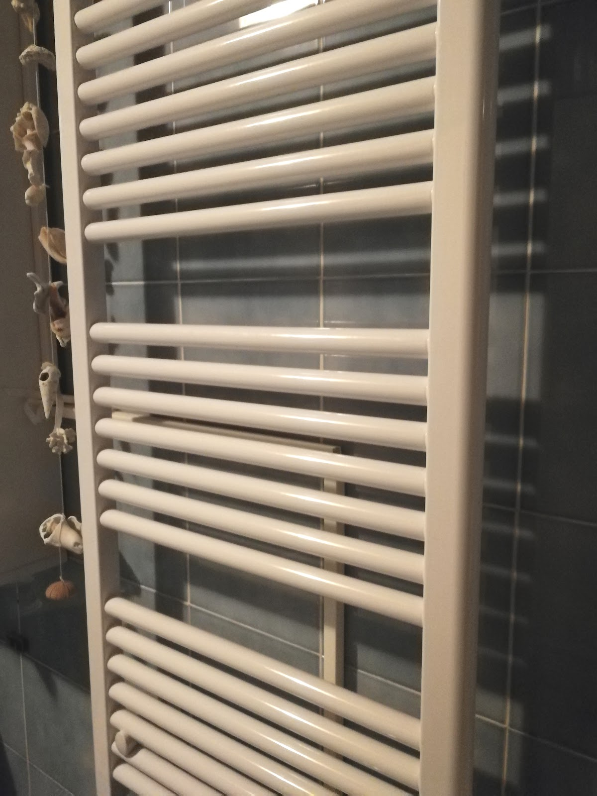
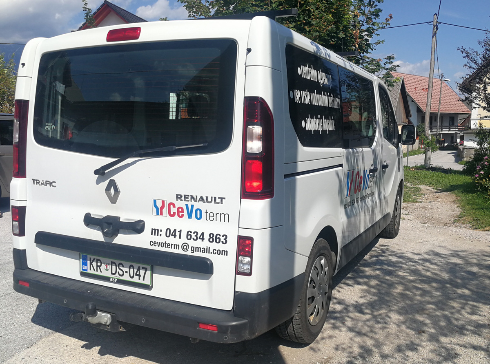
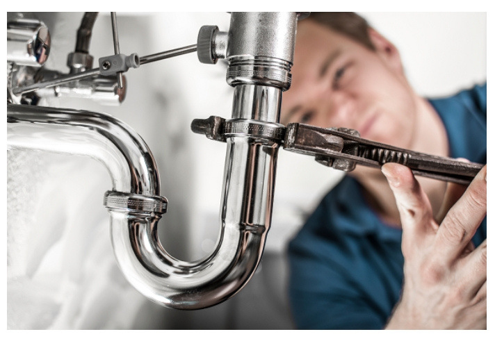
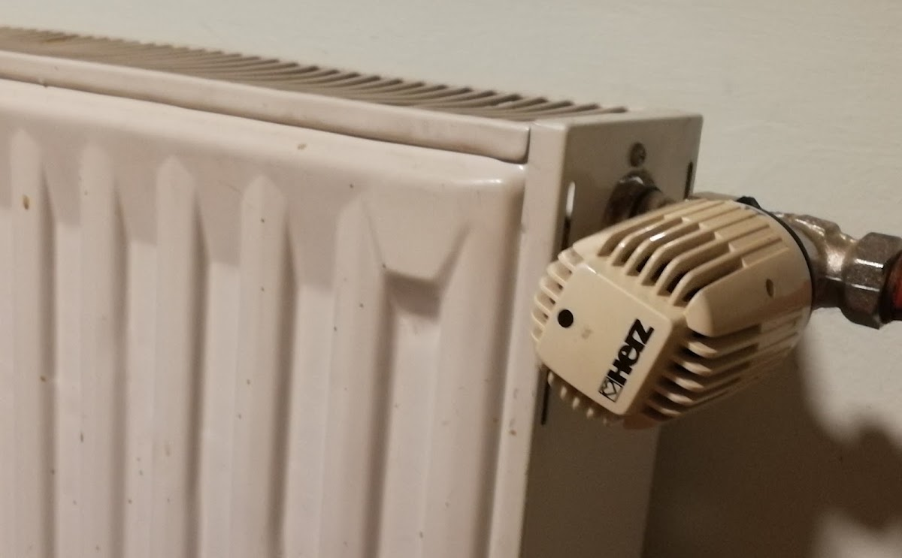
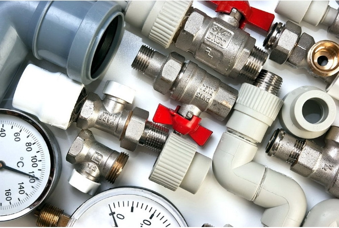

Storitve

Vodovodarske storitve
Podjetje je registrirano kot vodovodar. Za več informacij o storitvah pokličite neposredno na telefonsko številko.

Splošna dela
Poleg vodovodarstva je podjetje vpisano tudi kot izvajalec splošnih storitev oziroma kot splošni izvajalec.

Dosegljivost
Podjetje je dosegljivo od ponedeljka do petka med 8. in 17. uro. Vprašanja sprejemajo po telefonu.
O podjetju
O podjetju
CevotermiČ ikić Drago s.p. je podjetje, ki se nahaja na naslovu Rebr 15 v Zasipu pri Bledu. Dejavnost podjetja vključuje vodovodarske in splošne storitve. Na voljo so v delovnem času od ponedeljka do petka. Vse informacije in dogovore lahko pridobite preko telefonske številke. Podjetje je vpisano tudi v Google Maps, kjer je objavljenih nekaj fotografij.

Sodelovanje
Naša ponudba in sodelovanje
Podjetje ponuja vodovodarske in splošne storitve. Sodelovanje poteka neposredno preko telefona, kjer lahko pridobite vse potrebne informacije o storitvah.



Kontakt
Kontaktirajte za informacije
Za vse dodatne informacije ali dogovor o storitvah pokličite ali pišite. Pokličite za hiter odgovor.
Lokacija
Lokacija v Zasipu
Podjetje se nahaja v Zasipu pri Bledu, na naslovu Rebr 15. Okolica je mirna in dostopna, v bližini so stanovanjske hiše ter naravne danosti značilne za območje Bleda.